Путешествия по России
Настоящая страна не в выпусках новостей,
а здесь.
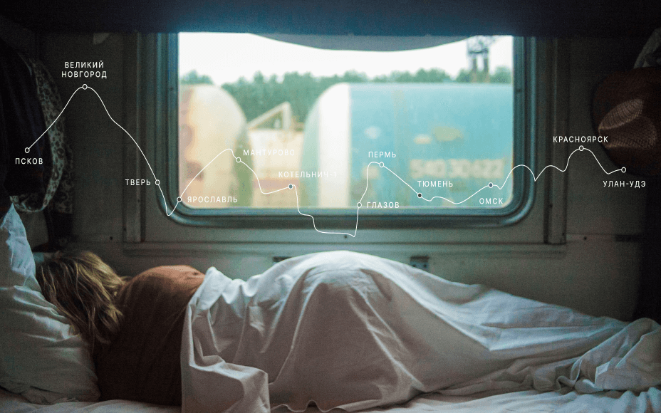
ваша полка — верхняя
Чего мы там не видели?
По опросам ВЦИОМ,
95% россиян мечтают куда-нибудь поехать,
но только 36% планируют провести отпуск в родной стране.
Мол, чего мы тут, дома, не видели? На самом деле,
Россия — это целая вселенная с ласковым морем юга,
густыми лесами Саян и суровыми льдами плато Путорана.
А ещё увидеть все эти красоты можно без миллионов на счету,
загранпаспорта и многочасовых перелетов. Как, например,
Вера Башмакова — смелая молодая мама, которая взяла
в охапку троих детей, усадила их в свою «Ладу»
и проехала 20 тысяч километров по родной стране.
Мы выбрали и описали некоторые интересные места,
достойные вашего отпуска.
- Часовых поясов 11
- Объектов природного наследия ЮНЕСКО 12
- Объектов культурного наследия ЮНЕСКО 16
- Природных заповедников 105
- Аэропортов 241
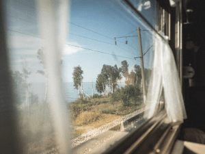
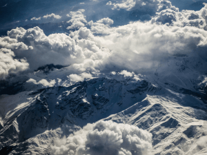
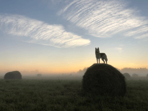
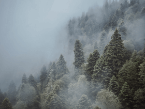
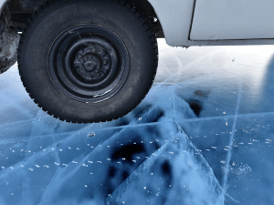
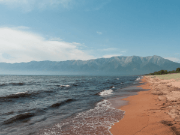
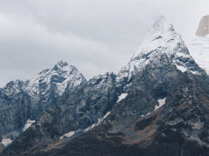
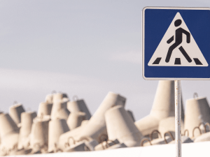
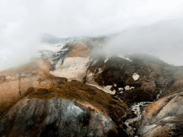
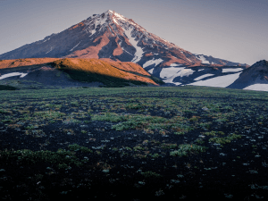
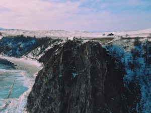
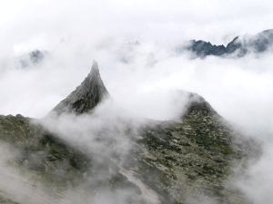
Куршская коса
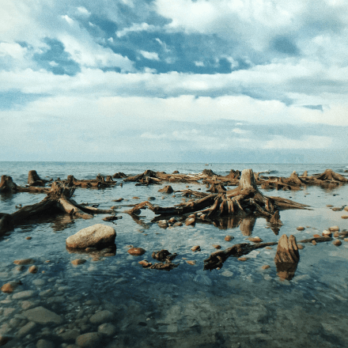
Здесь, посреди лесов и песчаных дюн,
вы сможете увидеть два водных горизонта —
спокойного Куршского залива с одной стороны
и подёрнутого рябью волн Балтийского моря
с другой. Уникальная природная зона на краю
российского анклава.
На этом Калининградская область
не заканчивается. Для путешественника и исследователя
там же по соседству — самая западная точка России,
Балтийская коса, — и немецкое наследие россыпи
небольших приморских городов.
Атмосфера здешних мест исключает суету,
окуная в спокойствие природы и запах стального,
прохладного моря.
Кольский
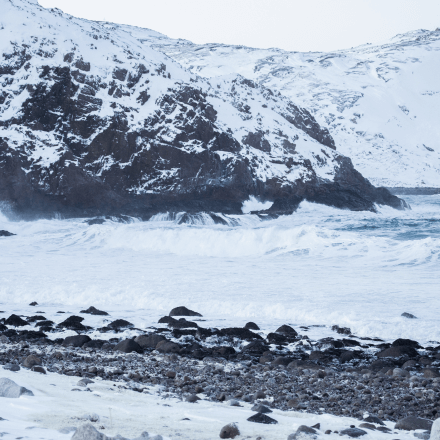
Почти весь полуостров находится
за Полярным кругом. Саамская тундра, от которой на юг —
тайга, а на север — Ледовитый океан, прикидывающийся
Баренцевым морем.
Возможно, вы смотрели Звягинцева
и даже слышали историю арктического фестиваля
в Териберке. Возможно, слово «Хибины» не осталось
под снегом школьных воспоминаний
об уроках географии. Возможно, вы не интересовались
пронизывающей земную кору сверхглубокой скважиной,
а от апатитов вас давно накрывает апатия.
Но ваша мечта увидеть северное сияние начинает
сбываться с билетом в Мурманск.
Алтай
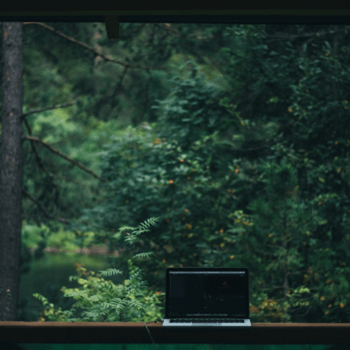
Алтай — одно из красивейших
мест в России. В первую очередь из-за гор:
если ехать вдоль хребта, вы увидите склоны,
усыпанные соснами, горные реки и озёра.
А если вы откроете в автомобиле окна, сможете познакомиться
с невидимым чудом здешних мест — горным воздухом.
Климат на Алтае умеренный, поэтому
ехать сюда лучше всего летом. Так вы увидите всё разнообразие
местной флоры и фауны. По лесам Алтая бродят лоси, над хребтами
летают орлы, а на равнинах пасутся косули. И знаменитые манулы —
тоже обитатели Алтайского края.
Зимний Байкал

Всем известен Байкал
как крупнейшее озеро в мире. Многие также знают,
что это самый большой источник пресной воды и одно
из красивейших мест в России.
Конечно, это всё так.
Но Байкал ещё идеальное место для соревнований
по скийорингу. Это такой вид спорта, когда
лыжник привязывает себя к мотоциклу, и тандем
старается развить как можно бóльшую скорость на льду.
В марте 2019 года на фестивале «Байкальская миля»
был поставлен мировой рекорд — 197.011 км/ч.
Карелия
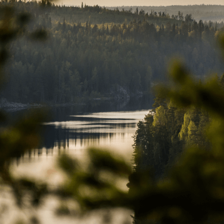
Сибирь заканчивается не на Урале,
а в Карелии: образующая тайгу сибирская лиственница не растёт
западнее Водлозера. Зато здесь она вымахивает на 30 метров —
леса карельских национальных парков из-за непроходимых болот
никогда не знали топора. Некоторым соснам уже больше чем полтысячелетия.
Прикоснитесь к живому существу, видевшему солнце раньше, чем увидал его
Иван Грозный. В девственном лесу на сотню километров не встретишь тропы.
А на редких тропинках деревья в паре метров от земли помечены
медвежьими когтями. Чтобы все знали, кто тут хозяин.